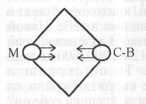

Беседа 3734 от 3877 · Беинса Дуно
Добър, справедлив, красив и умен
Отче наш
Изгрява Слънцето
(Направихме двете дихателни упражнения.)
Сила, здраве е богатство
Благост
Каква беше темата на миналата лекция? За какво се говори миналия път? Сега за блокадата мислите повече. Вчера всички бяхте затворени. Някой е нарисувал на черната дъска око и триъгълник.
В живота някой път ние бързаме и работите не ги правим както трябва. Искаме всички да бъдем щастливи и мислим, като че ли щастието е нещо, което можем да го купим. Щастието е едно съчетание. Човек има около 30 милиарда клетки и във всяка една клетка седи една разумна душа. Тридесет милиарда клетки съставят човека. И колкото повече души вземат участие в човека, толкоз той е по-щастлив. Колкото повече се отказват, толкоз е по-нещастен.
Ти вземаш една работа, но другите души не вземат участие в нея. Някой път мислим, че сме господари на положението. Заболи те крака, не можеш да ходиш, накуцваш. Казваш: “Не зная какво ми стана”. Някоя блокада иде. Упражнението на човешкия ум и на човешкото сърдце – това са двата пътя, по които човек върви. Засега умът на човека си служи с една много малка светлина. Ако вземем човека, къде е неговият характер? Главата му горе е северният полюс, а пък краката му долу са южният полюс. Пъпът е пък екваторът – там, дето е поставен стомахът, дето иска постоянно да яде. Там е най-топлото място, и затова най-голяма деятелност има стомахът. Стомахът е топлата област, гърдите са умерената област, а пък главата е полюсът. Ако цялото ни тяло имаше температурата на мозъка, щяхме да замръзнем. Мозъкът не се мени, много малко топлина има там, не се топят там нещата. По някой път можем да изгубим 10-15 кг от теглото си, а пък мозъкът много малко губи, едва 10 грама – много устойчиво вещество има той и много добре е организиран.
Доста време трябва, докато се научи човек да управлява ума си. Сега някой път вие се пренасяте в областта на стомаха, понеже там е чрезмерно топло и всички опасни животни са в тази област. Какво ли няма в екватора на човека! Всички най-опасни бръмбарчета са там. Най-опасните змии са в екватора, най-опасните тигри, лъвове, най-големите слонове, крокодили са все там.
Някой път питате: “Защо Господ направи света такъв?” Питам: ако ви зададат темата: “Кои са причините, защо животните ходят на четири крака, а човек ходи на два крака? Защо птиците хвъркат с крилата си из въздуха, а пък рибите плуват в морето?” – как бихте отговорили? Вземете тази тема: “Защо рибите са вътре във водата?” Някой път вие може да имате някоя ваша мисъл, която не може да я владате, понеже тя е във водата. Вие казвате: “Лесна работа, човек може да стане господар”. За да стане човек господар, той хиляди години трябва да живее на Земята, само за да стане господар на своите мисли. Как ще станеш господар на някой голям кит, който ходи надалече? Аз гледам една сестра, върви така, но несигурно върви. Съвсем бавно. А пък друга върви със ситни стъпки. На вас ви се вижда смешно. Онзи, който върви бавно, той къде е? Големи преспи има на планината, той върви бавно. А пък онзи, който върви бързо, той е на екватора. Там има мухи, които хапят, и гледа по-скоро да излезе от тази област. А пък бавното вървене е преодоляване на известни мъчнотии в живота. Богатите хора, които са много натоварени, някой владика или някой богаташ, вървят бавно. Натоварен е човекът. Има една мисъл за парите, които има. Много злато има.
Запример каква беше разликата между София и тук? В София, ако гледаш през прозореца, ще отправят пушката към тебе. Ще кажеш: “Нямаш право”. Ще кажеш: “Нямаш право да отиваш на балкона”. Няма какво да се тревожиш. Като турят блокада, целият ден чети, моли се. Тук беше по-свободно. Войниците бяха спрели тук две сестри. Те си оставиха котлите на чешмата и тръгнаха. Караха ги до едно място. Дойдоха до едно място, спряха се и се разговарят. Войниците си казаха: “Защо ще ги караме?” – “Ти казваш” – “Хайде идете си”. Хванаха надолу към юг. Тези две сестри не бяха изпълнили някои нареждания, бяха нарушили някои правила и без малко щяха да ги предадат в участъка.
Та казвам, дойде един брат, това беше вчера следобед, иска да говори. Седи на стола. Един брат и една сестра долу са седнали, не си приказват. Един млад брат и една млада сестра седят. Дойде войникът и казва на брата: “Вие тука не можете да си приказвате”. Братът си взе дърмите и остави сестрата. Дойдоха още трима войници. Младата сестра беше около 15 годишна. Срещнаха я войниците и ў казаха: “Не може да се разхождате. Онези хора в града са затворени, а пък вие се разхождате”. Животът на Земята е един сложен процес. Вчерашният ден имаше блокада. Дойде един дъжд и поля земята, цялата тази местност. Имаше гръмотевици. Гръм падна пред Дряновски. Той изскочи, понеже има гръмоотвод. Всичките му предпазители паднали. Той излязъл отвън съвсем пребледнял. Аз тъкмо бях отворил радиото. Цял пукот стана.
Често ние страдаме от идеите на миналото. Ти почнеш да остаряваш. Като почнеш да остаряваш, ти не носиш сегашните идеи, те са идеи на хиляди години от миналото. Като остарее човек, почва постоянно да се връща как е бил като дете. Той преповтаря живота си. Мисли все за стари работи, а за нови работи не мисли. Този му живот минава в преповторение на миналото. Казвам – остарявате. Ние сме като ученици, които държат матура в гимназията. Те държат матура за онова, което са учили през 5-тях години, за да се види какво знаят от този материал, който са учили. А пък може би, някой път човек държи матура, за 10-15 години какво си учил. Запример някой път държите матура за търпението. Колко хиляди години ще минат, докато станете търпеливи. Вземете войната. Това не е едно положение на търпеливи хора. Това са хора башибозуци. Всеки иска да стане неговата воля. Всеки иска да победи, няма желание да изпълни Волята Божия. Казват: “Колкото повече хора избива, толкоз по-добре”. В Русия цяла една местност на много километри са разрушили села и градове. Ако отидете сега в Италия, ще видите разрушения, ще видите какво правят съвременните модерни бомби.
Вчера един българин дошъл от Германия, говори за модерните бомби, които образували празни пространства. Прозорци, врати изхвърлят от къщите. Тези бомби са много опасни. Хората слизат в избите. Там е по-безопасно, понеже, ако си в горните етажи, може да ви изхвърлят на улицата с прозорците заедно от третия или четвъртия етаж чрез тези бомби. Затова в избите е безопасно. Ако бомбата падне в избата, ще затрупа всички. Паднала една бомба и 15 души германци ги затиска. Цяла една седмица стоят затиснати. Като ги откриват, извадили ги и нито един не е умрял. Там имало въздух, имало бисквити, картофи.
Сега често ние страдаме от войни, които още стават в нас. Някой път ти си неспокоен, война има в тебе. Някой път ти се разсърдиш, не си сам, война има. В дадения случай не си ти сам. Ти се разсърдиш, може би 200, 300, 500 хиляди души се сърдят в този момент. Ти се сърдиш и същевременно 500 хиляди души се сърдят. Турили са картечницата. Колко време ти взема да дойдеш на себе си? Може би един ден. Някой път цяла една седмица минава, докато човек получи равновесие.
Та казвам: целият живот седи в това, да научи човек Волята Божия в света и да научи Царството Божие. Той трябва да научи тази закономерност в света, законите, които Бог е поставил в Природата. И само тогава можем да търсим това, което искаме. Някой казва: “Не е лесна работа да изпълним Божиите закони”. Опитайте се да свирите на цигулка според всичките правила, които са турени от сегашните музиканти. Главата ви ще побелее. Някой път 30 години трябва да посвети човек, за да изкара хубави тонове от цигулката. Да ви приведа пример. Нали знаете какво са клепала. Едно време имаше дървени клепала. Хората изучаваха кои дървета са музикални и от музикалните дървета направят клепала. И с две чукчета удрят по клепалото трака-трак и ще се чуе гласът надалече. Обикновеният човек, който няма разсъждение, казва: “Това е дъска, клепало”. Но онзи човек, който е умен – италианските майстори са ходили при старите клепала да ги изучават и от старите клепала са направили най-хубавите цигулки, понеже тези дъски са станали от упражненията музикални. Трябва да знаеш в каква посока са нишките на дървото. Тези нишки предават енергиите по-лесно. Енергиите в дървото се предават по-лесно в известни посоки. Един разумен човек от едно клепало ще направи една хубава цигулка, една хубава ръчка, ще тури четири струни и тогаз най-хубавите звукове могат да се изкарат от това дърво. Човек има едно тяло, и ако от това тяло не можеш да изкараш най-хубавите мисли, чувства и постъпки, ти не си много умен човек. Ние искаме само да чукаме с чукчета. Чукчетата са клепалото. Тези двете чукчета – едното чукче на ума и другото на сърдцето. Някой път ти не знаеш с ума си ли мислиш или със сърдцето си чувствуваш.

Да допуснем сега, че някой от вас си купи едно радио. По радиото слушаш някои песни. Утешава те това радио. Ако не искаш да учиш, много прост човек ще останеш. Това, което правят по радиото, не си ти. Това е, което хората правят. И ако през целия си живот се занимаваш с това, какво говори радиото, какво ще научиш? Да допуснем, че си взел билет и по радиото слушаш, че ще се тегли лотария, има 100 билета, ти имаш една четвъртинка билет. Каква възможност има твоята четвъртинка да печели? След колко години ти можеш да имаш най-голямата печалба? Сега да ви приведа другото.
Представете си красива мома като ангел, като земен ангел, и друга мома, която е грозотия, но страшна грозотия. Каква е разликата? Грозната мома всякога ще има несрети. Каквото иска тя, няма да стане. Тази, красивата мома пък, каквото пожелае, дето иде, всичко ще има. Къде седи силата на красивата мома? Красотата е едно изявление на човешката Доброта, на човешката справедливост, на човешката Любов и на човешката разумност в лицето. Всички възвишени същества са много красиви. И според степента на тяхната красота е тяхната разумност. Най-разумните са най-красиви. Колкото тяхната красота отслабва, толкова стават по-грозни. Сега разликата между Доброто и Справедливостта е в това, че Справедливостта е в студения пояс, там е студеният северен полюс. При Справедливостта трябва да имаш печка, да се стоплиш. Доброто е естественото положение. Ако живееш в Доброто, няма да имаш нужда да си купуваш въглища, дърва, там има изобилно плодове. Ако дойдеш до справедливостта, от далечни пространства трябва да караш дърва и други неща. Умствените дърва някой път струват един тон 10 000 лева. Ако изгориш 10 кубика, то са 100 хиляди лева, които трябва да похарчиш. А пък на северния полюс как е добил човек своето богатство? Трябва да питате ескимосите. Ако си рибар, ще знаеш да ловиш риба. Тук, който сее повече, е по-богат, а който не сее, гладува. А пък там, който знае добре да хваща рибите, е по-богат. Някой път казвате: “Той е майстор да хваща рибите”. Щом говорите за рибите, вие сте на северния полюс. Запример ние и за маймуните имаме долно мнение. Казваме: “Той е маймуна”. Маймуните хиляди години не можаха да ги заставят да станат месоядци. Много от тях са вегетарианци, плодоядци. Смеят се на подражанието, на възприемчивостта на маймуната, у тях подражанието е силно. Човек без подражание не би имал култура. Видиш нещо хубаво, веднага да го възприемеш.
Разправят един анекдот за един турчин, който пътувал за Африка. Той носел една камила товар, червени фесове. Минавали през гората, дето живеят маймуни и той носел един фес на главата си. Спрял се, отворил товара с фесовете, оставил ги на земята. Като задрямал малко, видял че цялата гора е пълна с маймуни и всичките маймуни с по един фес на главата си. Взема той един предмет от земята и го хвърля на маймуните, те пък му хвърлят плодове. Той взема камъни и хвърля на тях, те от дърветата отгоре му хвърлят плодове и крякат всичките маймуни с червени фесове на главата. Отчаял се човекът. Казал: “Защо ми трябваше. Отиде богатството ми, отидоха всичките ми фесове. И този фес защо ми е?” И хвърля феса си на земята. И всичките маймуни си хвърлили фесовете. Сега закон е: ти имаш едно състояние, едно лошо състояние, то е фес. Ти държиш своето състояние – феса. Вземаш камъчета и хвърляш, и всичките маймуни и те хвърлят своите фесове. Всичките примери имат за задача, да пояснят известна идея. Този въпрос е доста труден. Ако вие бяхте на мястото на този турчин, как щяхте да постъпите? И вие щяхте да имате неговата опитност.
Наскоро идва една млада мома, и като умирала майка ў, оставила ў една скъпа гривна, струвала 50-60 хиляди лева. Тя си имала една сума 20-30 хиляди лева в една спестовна книжка. Умира майка ў, дъщеря ў отива да я погребва, някой влиза и взима гривната и нейната спестовна книжка с парите. Спестовната книжка намерила. Понеже гривната била оставена от майка ў, момата ме пита къде ў е гривната. Защо ме интересува къде ў е гривната? Дали тя или друг я носи, за мене е все едно. Тя иска да ў кажа кой взел гривната. Казах ў: “Това не ме интересува”. Защо не ме интересува? Има няколко съображения за това. Едното е, че е много мъчно да познаеш кой е взел гривната. Тя мисли, че ясновидецът може да вижда този, който взел гривната. Той е далече, а щом е далече, не можеш да го видиш лесно. Ако някой човек е с отворено сърдце, по-лесно можеш да го разгадаеш. А пък някой човек е затворен, мъгливо е. Когато е мъгливо, може ли да се ориентираш?
Отче наш
32-ра лекция от Учителя, държана на 5.V.1943 г. сряда 5 ч. с., Изгрев.